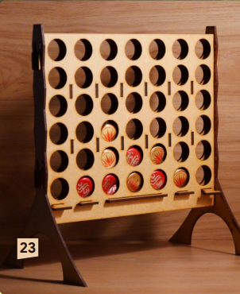

Le puissance quatre
Le jeu de Siam

Le jeu hexagonal Iso-Path

Jeux de société en intérieur
Pour cette sélection de jeux de société en intérieur, nous vous proposons le top 3 des jeux fabriqués au sein de notre école par l'association Fabric'INSA.
En effet cette association propose plusieurs jeux de plateau réalisés en bois à des prix très abordables.
Pour plus d'informations sur cette association et leur organisation , nous vous invitons à consulter leur site.